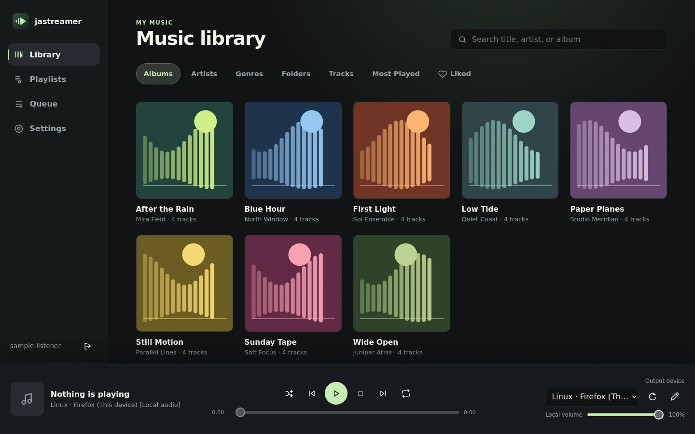
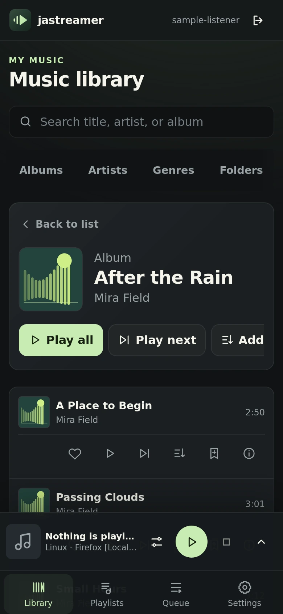

Self-hosted music server v0.2.3
Your music.
The output you choose.
Keep your music on your own Linux or Windows Server. Browse your library and control one shared queue from your computer or phone, then play through this device or a supported network output — all on your private LAN.
- Linux and Windows Server
- No telemetry or analytics
- English and Korean interface
- Apache License 2.0

What it does
A music library that lives on your network, not in someone else’s cloud.
jastreamer plays only local files you own. The Server keeps the state; every browser, desktop app and phone shows the same Server-hosted interface.
-
Scans without touching your files
FLAC, MP3, WAV/WAVE, Ogg/Vorbis, Opus and M4A from a read-only library. Scan now reuses saved results for unchanged files; a confirmed Full rescan rereads everything.
-
Browse the way you think
Tracks, albums, artists, genres and folders with embedded artwork and search. Folder actions apply to every matching track in subfolders.
-
One queue for the whole house
A Server-wide queue that preserves order and duplicates and survives restarts, with shared Shuffle and Repeat off / all / one, plus playlists.
-
Likes and Most Played
Server-wide likes and play counts, a Most Played view, and a one-time Shuffle liked into queue action. Counts live in the database, never in your file tags.
-
Checks every file end to end
Background audio verification with a filterable error and file-check history that you can export as CSV.
-
Accounts on your terms
First-account setup, password login, change and recovery, durable sessions, and an optional built-in HTTPS listener with your own trusted certificate.
Supported outputs
- This deviceBrowser audio with a per-device output name and local volume.
- UPnP/DLNABuilt in: discovers and controls renderers on your LAN.
- Google CastOptional on both Server platforms; off by default.
- AirPlaySending from the Linux container only, including PIN/password pairing.
Discovery needs multicast and private-LAN routes between Server, client and output (SSDP UDP 1900 for UPnP, mDNS UDP 5353 for Cast and AirPlay). Receivers differ — some lack pause or seeking, reject formats or require authentication — so confirm playback and sound on your own equipment.
On your phone
Made for the couch, too.
iPhone and Android phone browsers get a four-tab layout with collapsible playback controls. Pick your phone as an output, or use it as a remote for the speaker across the room.
-
Android app
A signed APK for Android 10+ adds system media controls, opt-in direct USB output to a USB Audio Class DAC, and Saved music — an independent offline library that plays without a Server or sign-in.
-
Installable Web app (PWA)
Optional, and needs a trusted HTTPS origin. It is a network client with no library cache, so it does not play offline.
-
iPhone and iPad
Use the Web interface in a browser: iPhone gets the phone layout; iPad keeps the standard layout. The native iOS client is controller-only and available as source and CI builds only — there is no App Store or TestFlight release.

Download · version 0.2.3
Start with a Server, then add the clients you want.
All packages come from the v0.2.3 release on GitHub. Verify each download before installing — the install guide has the exact steps.
Every client needs a running jastreamer Server.
Desktop apps, phone browsers and the PWA all display the Server-hosted Web interface. The only exception is the Android app’s Saved music, which plays music already imported to the phone without a Server.
Server Required. Runs on a Linux host, a Synology NAS or Windows.
-
Linux or Synology amd64 · arm64
Includes the Web interface, audio-only FFmpeg and the AirPlay sender. Pin the immutable digest listed in the release, not a tag.
arm/v7is not supported. -
Windows x64 Not Authenticode-signed
Web interface, UPnP/DLNA and optional Cast. No AirPlay, no FFmpeg, and not a Windows service. SmartScreen may warn: verify the SHA-256 and unblock the ZIP before extracting.
Desktop apps Optional clients of an existing Server. Browser audio by default.
-
Windows 10/11 x64 Not Authenticode-signed
Adds opt-in WASAPI Shared/Exclusive output and Windows media controls. No ARM64 package. Verify the SHA-256 and unblock the ZIP before extracting.
-
macOS 13+ on Apple Silicon Ad-hoc signed · not notarized
Adds opt-in CoreAudio Shared/Exclusive output to a USB DAC, plus Now Playing and system media controls. This official package has no Apple Developer ID signature and is not notarized, so Gatekeeper can block it — do not bypass macOS security. No Intel, Rosetta or Universal build.
-
Linux amd64
Browser audio only. Ubuntu 24.04 amd64 is the qualification target; no ARM64 package. Install through APT so dependencies resolve.
Phones and browsers Android app, iOS source, or any current browser on your LAN.
-
Android 10+ Signed release APK
Signed with the jastreamer release key; check the signer certificate before installing. Not distributed through Google Play, so Play Protect may warn about the source. Saved music works independently of the Server.
-
iOS / iPadOS 18.4+ Source and CI only
A controller-only native client built from source in CI. There is no App Store, TestFlight or other distributed build — on iPhone, use the browser layout.
-
Browser or PWA
Open the Server’s LAN address in any current browser. Installing it as a PWA needs a trusted HTTPS origin, and it is not an offline player.
Verify before you install
Every asset is listed in SHA256SUMS, each package ships a .sha256 sidecar and manifest on the release page, and release-provenance.json records the source revision and CI runs.
The Android signer certificate SHA-256 is 53285C2C239AFF2927EBE6F5C6AEBB82FDBB50956ED84B1E9F0222B2D925943E. Read the code signing policy for the status of every artifact.
Setup
From release to first track in four steps.
The Server needs writable config and data folders and read-only access to your music. Details for each platform are in the install guide.
-
Pick and verify
Choose a release and verify its checksums or image digest.
-
Install the Server
On Linux or Synology or Windows, with your music root read-only.
-
Create your account
Open the Server’s LAN URL, create the first account privately, set the music folder and run Settings → Library → Scan now.
-
Pick an output and play
Select an output, play a track and confirm you hear it. Everyday controls are in the user guide.
Prefer help from an AI agent? Send it this request, review the proposed paths and service changes yourself, and never paste passwords, private keys or tokens into the prompt.
Help me install or update jastreamer from https://github.com/furyheimdall/jastreamer. Read and follow the repository’s AGENTS.md first.
Know the limits
What jastreamer is not.
Clear boundaries keep your music, your network and your expectations safe.
-
Not an Internet service
It is designed for a trusted private LAN and must not be exposed publicly. Plain LAN HTTP encrypts neither credentials nor audio; use the built-in HTTPS listener where that matters.
-
Not a cloud or subscription
It plays only local files you own and never modifies them. There is no telemetry, analytics, update check or externally hosted content.
-
Not a media server for other apps
It discovers and controls UPnP/DLNA renderers and serves media to them; it is not a DLNA library for third-party players.
-
Not an offline browser player
The PWA has no library cache. Offline listening exists only in the Android app’s Saved music.
-
Not self-updating or app-store software
There is no in-app updater, Windows service or app-store listing. Download and verify each update yourself; Server updates keep your data.